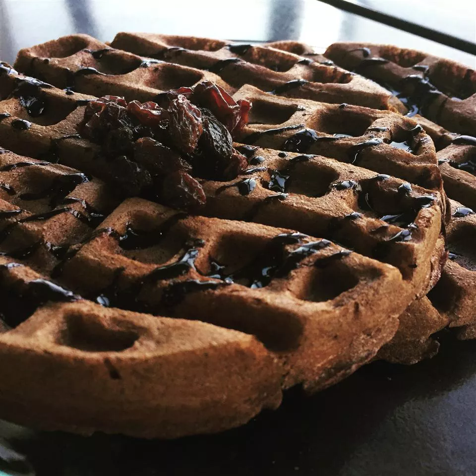

HomePage

Chocolate Waffle Recipe
Ingredients
Waffles
- 1 ½ cups all-purpose flour
- ½ cup white sugar
- 3 tablespoons unsweetened cocoa powder
- 3 teaspoons baking powder
- ½ teaspoon salt
- 1 cup milk
- 2 large eggs
- 4 tablespoons butter, melted
Hard Sauce
- 1 tablespoon butter, softened
- ¾ cup confectioners' sugar
- ½ teaspoon vanilla extract
-
1 teaspoon milk/li>
Other
- nonstick cooking spray
Directions
- Preheat a waffle iron.
-
Make waffles: Stir together flour, sugar, cocoa, baking powder, and salt
in a large mixing bowl. Stir in milk, eggs, and butter until the mixture
is smooth.
-
Make hard sauce: stir together softened butter, confectioners' sugar,
vanilla extract, and milk. Sauce should be fairly stiff. Set aside.
-
Spray preheated waffle iron with nonstick cooking spray. Pour waffle mix
onto hot waffle iron. Cook until golden brown. Serve hot with hard
sauce.